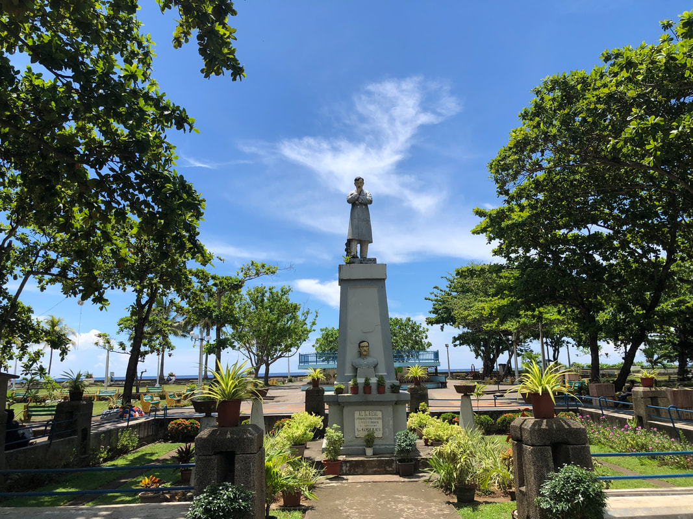
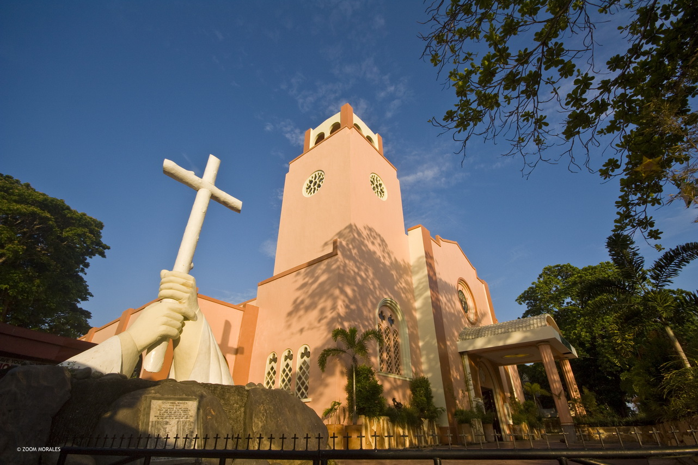
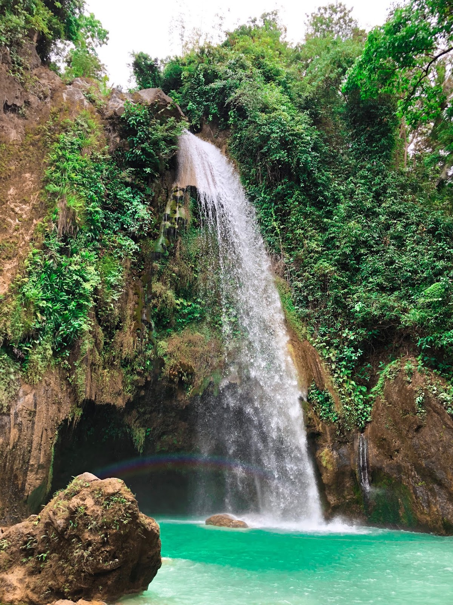
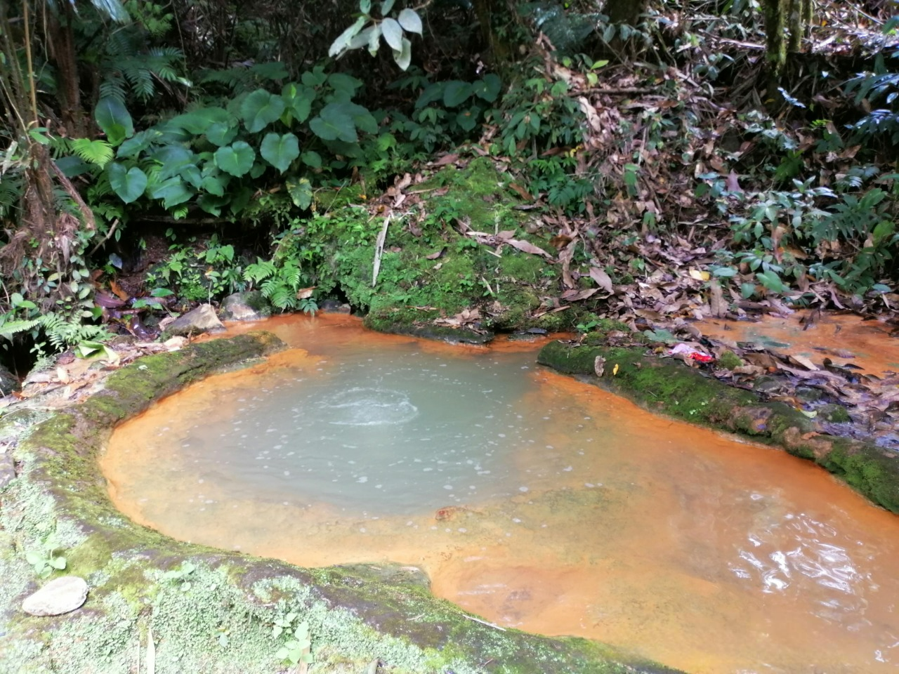

Popular Atractions

Oroquita City Plaza
The plaza is the vibrant heart of the city, where people can chill and get food from local eateries. It features beautifully landscaped gardens, a charming fountain and plenty of seating areas for relaxation. It is a popular spot for both locals and visitors to gather, especially for festivals and events. As a central Oroquieta tourist spot, it’s the perfect place to soak in the local atmosphere and enjoy a leisurely stroll.

Holy Rosary Church
Come visit this church if you want to see beautiful yet simple religious architecture. It is a newly refurbished site that holds significant cultural importance in Oroquieta. The shrine is dedicated to the Blessed Virgin Mary and attracts pilgrims and tourists alike. The site offers a peaceful and spiritual atmosphere, perfect for reflection and prayer. As a revered Oroquieta tourist spot, visitors can also enjoy the sights of ancient acacia trees that surround the grounds.

Ambak-Ambak falls
These natural falls are a breathtaking natural wonder nestled in the lush forest of Oroquieta. The waterfall and surrounding greenery create a picturesque and refreshing escape. Visitors can enjoy a cool dip in the natural pool at the base of the falls or take a scenic hike through the forest trails. As one of the most scenic Oroquieta tourist spots, it’s an ideal location for nature lovers and adventure seekers.

Sebucal Hot Spring
Sibucal Hot Springs offers a therapeutic experience that will rejuvenate your body amidst the beauty of nature. The natural hot springs are set in a serene environment that provides a perfect spot for relaxation and wellness. Visitors can soak in the warm, mineral-rich waters and enjoy the surrounding greenery. It’s an ideal place for those looking to unwind and enjoy the healing benefits of natural hot springs as among the top tourist destinations in Misamis Occidental.